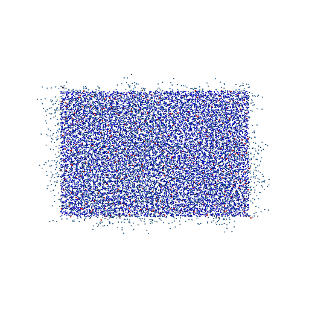

🎯 SciVisAgentBench Evaluation Report
📊 Overall Performance
Overall Score
48.4%
138/285 Points
Test Cases
3/3
Completed Successfully
Avg Vision Score
27.9%
Visualization Quality
44/160
PSNR (Scaled)
N/A
Peak SNR (0/3 valid)
SSIM (Scaled)
N/A
Structural Similarity
LPIPS (Scaled)
N/A
Perceptual Distance
Completion Rate
100.0%
Tasks Completed
ℹ️ About Scaled Metrics
Scaled metrics account for completion rate to enable fair comparison across different evaluation modes. Formula: PSNRscaled = (completed_cases / total_cases) × avg(PSNR), SSIMscaled = (completed_cases / total_cases) × avg(SSIM), LPIPSscaled = 1.0 - (completed_cases / total_cases) × (1.0 - avg(LPIPS)). Cases with infinite PSNR (perfect match) are excluded from the PSNR calculation.
🔧 Configuration
📝 curved-membrane
24/45 (53.3%)
📋 Task Description
1. Please load the Martini coarse-grained simulation file from "curved-membrane/data/curved-membrane.gro" into VMD.
2. Use VMD to show a zoomed in view of the membrane side coloring the water blue and the lipid phosphate (PO4 beads) red, and take a screenshot.
3. Analyze the visualization and answer the following questions:
Q1: Is there any water that penetrates into the membrane phase? (yes/no)
4. Save your work:
Save the VMD state as "curved-membrane/results/{agent_mode}/curved-membrane.vmd".
Save the screenshot of the visualization as "curved-membrane/results/{agent_mode}/curved-membrane.png".
Save the answers to the analysis questions in plain text as "curved-membrane/results/{agent_mode}/answers.txt".
🖼️ Visualization Comparison
Ground Truth

Agent Result

Image not available📏 Vision Evaluation Rubrics
📝 Text-Based Q&A Evaluation
📊 Detailed Metrics
Visualization Quality
3/20
Output Generation
5/5
Efficiency
6/10
Text Q&A Score
10/10
100.0%